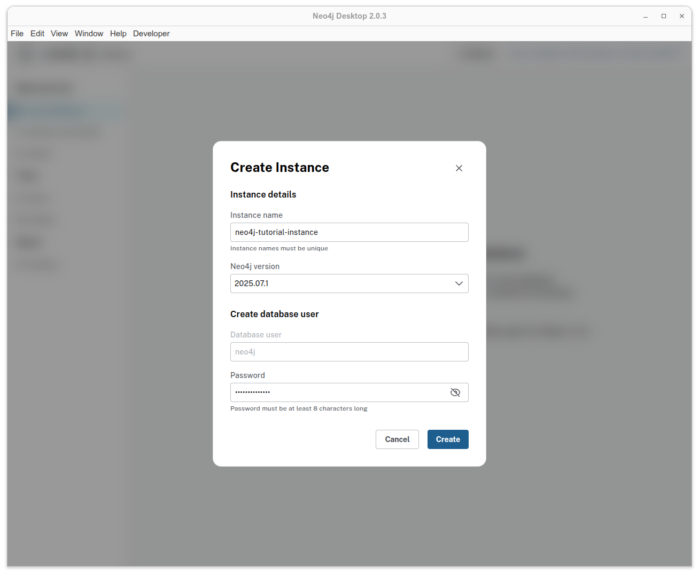
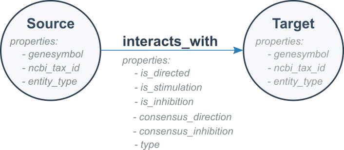
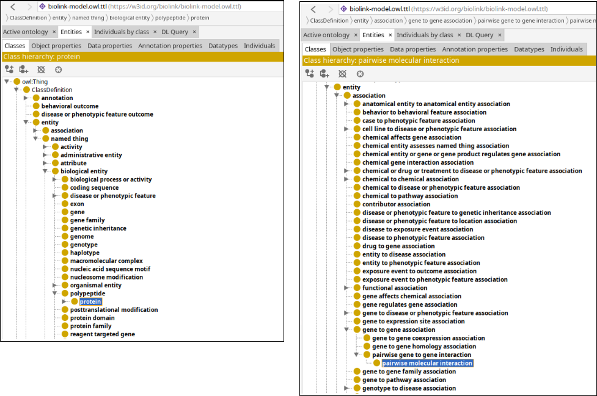
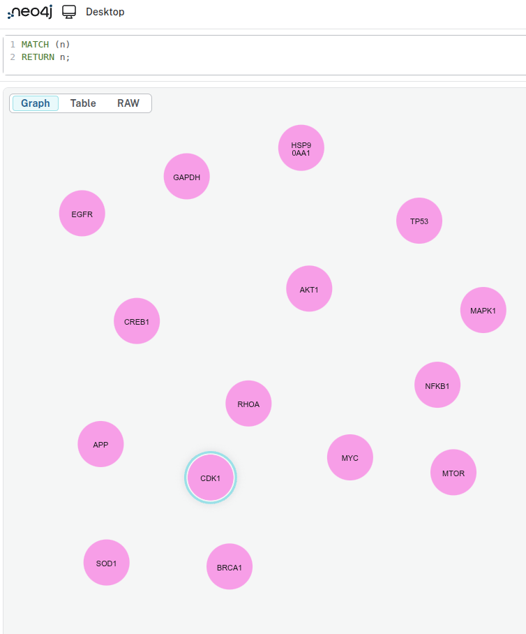
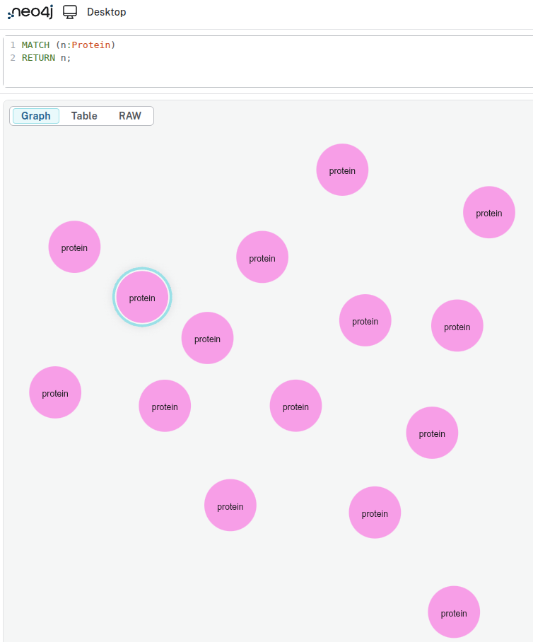
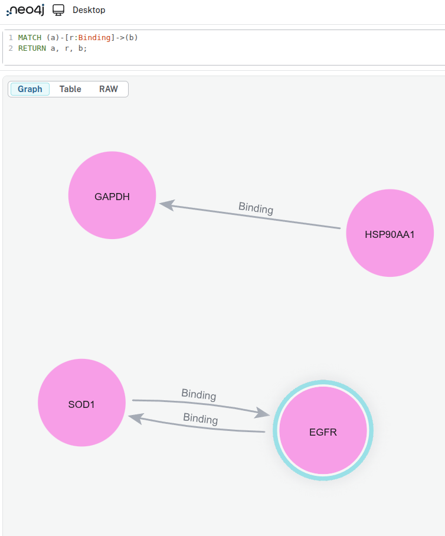

Hands-on Building Graphs with BioCypher (offline mode) and Neo4j
Overview
This tutorial will help you get started with BioCypher in offline mode. You will learn how to create a simple knowledge graph with a synthetic dataset that contains information about proteins and its interactions.
By the end of this tutorial, you will be able to:
Set up BioCypher for a basic project.
Explore a synthetic dataset and how to obtain a graph model from it.
Build a small knowledge graph from the data.
View and query the graph using Neo4j.
Pre-requisites
Note: Ensure you have the following prerequisites before continue with the tutorial.
In this section, you will set up your working environment using the BioCypher Project Template. This template provides a ready-to-use folder structure and example files, so you can focus on building your application.
Steps:
Go to the BioCypher Project Template and click on "Use this template". Name your repository as tutorial-basics-biocypher. Then clone your repository to obtain a local copy:
gitclone<your-repository-url>
Check the current project structure. Below, we list the most important folders and files for this tutorial.
Install the dependencies using your preferred package manager (e.g. uv, Poetry or pip):
You should always first create a dedicated Python environment for your project, and then install the dependencies into the environment. Environments can be managed by conda, uv ,poetry or venv, for example.
After you have created your environment, activate the environment and install the required packages using your preferred package manager.
Using uv: (recommended)
uvsync
Using Poetry:
poetryinstall--no-root
Using pip:
pipinstall.
You also need to install Jupyter into your environment, i.e. pip install jupyter, if later you want to explore the sample data in a Jupyter notebook.
Setup Neo4j
In this section, we will create a Neo4j instance to use later in the tutorial. It is important to set this up now.
Execute Neo4j Desktop, if this the first time you should see a window like this one.
Figure 1. Neo4j Desktop start screen.
Create a new instance in Neo4j. For this tutorial, name it neo4j-tutorial-instance and choose a password you can remember.

Figure 2. Create Instance window. This may vary depending on your Neo4j version.
Access details in the option Overview.
Figure 3. Overview option to check details related to your Neo4j instance.
Save the path to your Neo4j instance, we are going to use this path later in this tutorial.
Figure 4. Neo4j instance with its path location highlighted.
Section 1. Exploratory Data Analysis
For this tutorial we are going to use a synthetic dataset that contains information about the interaction between proteins. The dataset is contained in a tsv file, similar to a csv file but using tabs instead of commas as delimiters.
Create a folder called notebooks under tutorial-basics-biocypher
mkdir-p./notebooks/
Create and run either a Python file or a Jupyter notebook containing the following code.
File: notebooks/eda_synthetic_data.py
importpandasaspd# Load the datasetdf=pd.read_table('../data/in/synthetic_protein_interactions.tsv',sep='\t')# Show the first few rowsprint("\n---- First 10 rows in the dataset")print(df.head(10))# List the columns in the datasetprint("\n---- Columns in the dataset")forcolumnindf.columns:print(f"\t{column}")# Get basic info about the datasetsprint("\n---- Summary Dataframe")print(df.info())# Check for missing valuesprint("\n---- Check missing values")print(df.isnull().sum())# Show summary statistics for numeric columnsprint("\n---- Describe Dataframe statistics")print(df.describe())# Count the unique number of proteins in each columnprint("\n---- Number of unique proteins per column.")print('Unique proteins in column protein_a:',df['source'].nunique())print('Unique proteins in column protein_b:',df['target'].nunique())
Exercise:
a. How many unique proteins do we have in the dataset? Hint: count unique proteins in the source and target columns.
b. How many interactions exist in our dataset? Hint: count unique interactions between sources and targets.
c. Some columns contain boolean values represented as "1" and "0". Can you detect which ones?
Answer:
a. Number of unique proteins: 15.
b. Number of unique interactions: there are 22 unique interactions. One interaction is repeated, with a difference in one of its properties.
c. is_directed, is_stimulation, is_inhibition, consensus_direction, consensus_stimulation,consensus_inhibition.
Section 2. Graph Modeling
Graph Modeling
By looking at the tsv file, we can see that there are two columns called source and target, which represent proteins. This means that each row represents an interaction between a source protein and a target protein. For now, our graph could look like this.
Figure 5. Simple graph model for representing interactions between proteins.
Can we improve the graph? Absolutely! Understanding the data is essential for building an effective graph. By examining the other columns in the table, we can identify additional details:
The source and target columns represent nodes in the graph, with each node corresponding to a protein.
Each protein listed in the source column has associated properties found in other columns:
source_genesymbol: the gene symbol of the source protein.
ncbi_tax_id_source: the NCBI taxonomy identifier of the source protein.
entity_type_source: the type of entity for the source protein.
Each protein in the target column has associated properties found in other columns:
target_genesymbol
ncbi_tax_id_target
entity_type_target
Figure 6. Simple protein interaction graph with properties in nodes.
We know that a source protein interacts with a target protein, but do we know how?
Remaining columns in the table describe properties of these protein-protein interactions:
Interaction properties
is_directed
is_stimulation
is_inhibition
consensus direction
consensus stimulation
consensus inhibition
type
It is these protein-protein interactions that form the edges in the graph. Here, is_directed, is_stimulation, and is_inhibition describe properties that characterize each interaction type, while consensus direction, consensus stimulation, and consensus inhibition indicate the aggregated or consensus value derived from multiple sources in OmniPath for each property.
We are ready to model our second version of our graph. It is like follows:

Figure 7. Protein interaction graph showing node and edge properties.
Finally, we can model a more detailed graph using our dataset. Rather than representing all interactions in a generic way, we can use the type field to show the specific type of interaction occurring between each pair of proteins.
Figure 8. Graph model for representing different interactions between proteins.
Exercise 1. Example of a graph we expect with our data
Exercise:
Sketch a portion of the knowledge graph using the provided dataset.
Answer:
If you include all the nodes and edges from your TSV file, your sketch should look like the following example:
Figure 9. Configuration step in the BioCypher pipeline.
Create a schema for your graph
Rationale: the schema file allows us to define the skeleton for our knowledge graph. Nodes, edges, properties are defined here.
The following is an example of how our schema file should look like, all of this is based on how we defined the graph structure (nodes, edges and their properties).
File: config/schema_config.yaml
#-------------------------------------------------------------------#------------------------- NODES -------------------------#-------------------------------------------------------------------#========= PARENT NODESprotein:represented_as:nodepreferred_id:uniprotinput_label:uniprot_protein#-------------------------------------------------------------------#------------------ RELATIONSHIPS (EDGES) -----------------#-------------------------------------------------------------------#========= PARENT EDGESprotein protein interaction:is_a:pairwise molecular interactionrepresented_as:edgeinput_label:protein_protein_interactionproperties:is_directed:boolis_stimulation:boolis_inhibition:boolconsensus_direction:boolconsensus_stimulation:boolconsensus_inhibition:bool#========= INHERITED EDGESbinding:is_a:protein protein interactioninherit_properties:truerepresented_as:edgeinput_label:binding# ...rest of schema_config.yaml omitted for brevity...
Nodes
The protein top-level key in the YAML snippet identifies our entity and connects it to the ontological backbone.
Key
Value
Description
represented_as
node
Specifies how BioCypher should represent each entity in the graph; in this case, as a node.
preferred_id
uniprot
Defines a namespace for our proteins. In this example, all proteins follow the UniProt conventiona 5-character alphanumeric string (e.g., P00533).
input_label
uniprot_protein
Indicates the expected label in the node tuple. All other input nodes without this label are ignored unless they are defined in the schema configuration.
For more information about which other keywords you can use to configure your nodes in the schema file consult Fields reference.
Edges (relationships)
As shown in Figure 7, each edge has the same set of properties (is_directed, consensus_direction, etc.). At this stage, we have two options for defining the edges:
Option 1: Create each edge and explicitly define the same set of property fields for every edge.
File: config/schema_config.yaml
#-------------------------------------------------------------------#------------------ RELATIONSHIPS (EDGES) -----------------#-------------------------------------------------------------------activation:is_a:pairwise molecular interactionrepresented_as:edgeinput_label:protein_protein_interactionproperties:is_directed:boolis_stimulation:boolis_inhibition:boolconsensus_direction:boolconsensus_stimulation:boolconsensus_inhibition:boolbinding:is_a:pairwise molecular interactionrepresented_as:edgeinput_label:protein_protein_interactionproperties:is_directed:boolis_stimulation:boolis_inhibition:boolconsensus_direction:boolconsensus_stimulation:boolconsensus_inhibition:bool# ...rest of schema_config.yaml omitted for brevity...
Option 2 (recommended): Create a base edge with the properties, and then create edges that inherit the behavior of this base edge. This approach reduces lines of code and avoids repetition. For example, if you have more than 20 edges, Option 1 would likely not be practical.
File: config/schema_config.yaml
#-------------------------------------------------------------------#------------------ RELATIONSHIPS (EDGES) -----------------#-------------------------------------------------------------------#==== BASE EDGE or PARENT EDGEprotein protein interaction:is_a:pairwise molecular interactionrepresented_as:edgeinput_label:protein_protein_interactionproperties:is_directed:boolis_stimulation:boolis_inhibition:boolconsensus_direction:boolconsensus_stimulation:boolconsensus_inhibition:bool#==== INHERITED EDGESactivation:is_a:protein protein interactioninherit_properties:truerepresented_as:edgeinput_label:activationbinding:is_a:protein protein interactioninherit_properties:truerepresented_as:edgeinput_label:binding# ...rest of schema_config.yaml omitted for brevity...
Let's explain the keys and values for the second case (Option 2), because we are going to use the second option approach.
Base Edge
The protein protein interaction top-level key in the YAML snippet identifies our edge entity.
Key
Value
Description
is_a
pairwise molecular interaction
Defines the type of entity based on the ontology.
represented_as
edge
Explicitly specifies that this entity is an edge.
input_label
protein_protein_interaction
Defines a namespace for our relationships.
properties
property: datatype (i.e. is_directed: bool)
Contains all properties associated with this edge; each property has a name and an associated datatype.
Inherited Edges
The activation: top-level key in the YAML snippet identifies our edge entity.
Key
Value
Description
is_a
protein protein interaction
Defines the type of entity; in this case, it is a child of the base edge we defined previously.
inherit_properties
true
Indicates whether all properties defined in the base edge should be inherited.
represented_as
edge
Specifies that BioCypher will treat this entity (activation) as an edge.
input_label
binding
Specifies the expected edge label; edges without this label are ignored unless defined in the schema.
A comment about the connection between BioCypher and Ontologies
In BioCypher, ontologies are integrated through the schema configuration file. This YAML file defines the structure of the graph by specifying which entities and relationships should be included. At the same time, it links those entities to the biomedical domain by aligning them with an ontological hierarchy. In this tutorial, we use the Biolink Model as the backbone of that hierarchy. The guiding principle is simple: only entities that are defined in the schema configuration and present in the input data are incorporated into the final knowledge graph.
Figure 10 illustrates the Biolink Model and some of its components organized in a hierarchy. Notice that entities such as protein (nodes) and pairwise molecular interaction (edges) appear both in the schema configuration and in the ontology. This alignment ensures that BioCypher graphs are not only structured consistently but also grounded in standardized biomedical concepts. For a deeper exploration of ontologies in BioCypher, see our ontology tutorial.

Figure 10. The Biolink Model as an ontology backbone. On the right, protein is represented as an entity; on the left, pairwise molecular interaction is defined as an association. Together, these demonstrate how the schema anchors graph components to standardized biomedical concepts.
Exercise:
Revise and complete the schema_config.yaml file, and make sure it is located in the config folder.
Answer:
See the example below for a completed schema_config.yaml.
File: config/schema_config.yaml
#-------------------------------------------------------------------#------------------------- NODES -------------------------#-------------------------------------------------------------------#==== PARENT NODESprotein:represented_as:nodepreferred_id:uniprotinput_label:uniprot_protein#-------------------------------------------------------------------#------------------ RELATIONSHIPS (EDGES) -----------------#-------------------------------------------------------------------#==== PARENT EDGESprotein protein interaction:is_a:pairwise molecular interactionrepresented_as:edgeinput_label:protein_protein_interactionproperties:is_directed:boolis_stimulation:boolis_inhibition:boolconsensus_direction:boolconsensus_stimulation:boolconsensus_inhibition:bool#==== INHERITED EDGESactivation:is_a:protein protein interactioninherit_properties:truerepresented_as:edgeinput_label:activationbinding:is_a:protein protein interactioninherit_properties:truerepresented_as:edgeinput_label:bindinginhibition:is_a:protein protein interactioninherit_properties:truerepresented_as:edgeinput_label:inhibitionphosphorylation:is_a:protein protein interactioninherit_properties:truerepresented_as:edgeinput_label:phosphorylationubiquitination:is_a:protein protein interactioninherit_properties:truerepresented_as:edgeinput_label:ubiquitination
Configure BioCypher behavior
Rationale: The purpose of writing a biocypher_config.yaml is to define how BioCypher should operate for your projectspecifying settings for data import, graph creation, and database interactionall in one place for clarity and easy customization.
File: config/biocypher_config.yaml
#---------------------------------------------------------------#-------- BIOCYPHER GENERAL CONFIGURATION --------#---------------------------------------------------------------biocypher:offline:truedebug:falseschema_config_path:config/schema_config.yamlcache_directory:.cache#----------------------------------------------------#-------- OUTPUT CONFIGURATION --------#----------------------------------------------------neo4j:database_name:neo4jdelimiter:'\t'array_delimiter:'|'skip_duplicate_nodes:trueskip_bad_relationships:trueimport_call_bin_prefix:<path to your Neo4j instance from Setup Neo4j section>/bin/
The first block is the BioCypher Core Settings, which starts with biocypher:
key
value
description
offline
true
Whether to run in offline mode (no running DBMS or in-memory object)
debug
false
Whether to enable debug logging
schema_config_path
config/schema_config.yaml
Path to the schema configuration file
cache_directory
.cache
Path to the schema configuration file
The second block is the Database Management System Settings, which starts with the name of the DBMS, in this case it's neo4j:
key
value
description
delimiter
'\t'
Field delimiter for TSV import files
array_delimiter
';'
Delimiter for array values
skip_duplicate_nodes
true
Whether to skip duplicate nodes during import
skip_bad_relationships
true
Whether to skip relationships with missing endpoints
import_call_bin_prefix
i.e., /usr/bin/
Prefix for the import command binary (optional)
The import_call_bin_prefix is the path to your Neo4j instance that you looked up in section Setup Neo4j together with the prefix /bin.
The default configuration that comes with BioCypher and more configuration parameters for the Settings are listed in BioCypher Configuration Reference.
Exercise:
Revise and complete the biocypher_config.yaml file, and make sure it is located in the config folder.
Answer:
See the example below for a completed biocypher_config.yaml. Note, the path in the import_call_bin_prefix correspond to my personal instance, you MUST update this path with yours, do not forget to add /bin/ as in my example
File: biocypher_config.yaml
#---------------------------------------------------------------#-------- BIOCYPHER GENERAL CONFIGURATION --------#---------------------------------------------------------------biocypher:offline:truedebug:falseschema_config_path:config/schema_config.yamlcache_directory:.cache#----------------------------------------------------#-------- OUTPUT CONFIGURATION --------#----------------------------------------------------neo4j:database_name:neo4jdelimiter:'\t'array_delimiter:'|'skip_duplicate_nodes:trueskip_bad_relationships:trueimport_call_bin_prefix:/home/egcarren/.config/neo4j-desktop/Application/Data/dbmss/dbms-08155706-b96e-4e74-a965-7d6d27b78db8/bin/
Step 2. Create an adapter
Figure 11. Adapter creation in the BioCypher pipeline.
Rationale: An adapter allows you to efficiently transform, integrate, combine data from different sources ensuring compatibility with BioCypher's schema and streamlining the import process.
a. Create a file called adapter_synthetic_proteins.py under the folder /template_package/adapters/, in this file we are going to create our adapter.
b. Define Enums for the different types of nodes in our graph and their properties. An Enum is simply a list of allowed values for a category for example, all possible node types in the graph. Using Enums helps ensure that only valid types are used, makes the code easier to read, and avoids typos. For now, just focus on analyzing the snippet and compare its values with the node elements expected in the schema file(schema_config.yaml).
classAdapterNodeType(Enum):""" Define types of nodes the adapter can provide. """PROTEIN=auto()classAdapterProteinField(Enum):""" Define possible fields the adapter can provide for proteins. """ID="id"PREFERRED_ID="preferred_id"GENE_SYMBOL="genesymbol"NCBI_TAX_ID="ncbi_tax_id"
c. Similarly, define Enums for the different types of edges in our graph and their properties. For now, analyze the following snippet and compare the listed types with the edge elements expected in our schema file (schema_config.yaml).
classAdapterEdgeType(Enum):""" Enum for the types of the protein adapter. """PROTEIN_PROTEIN_INTERACTION="protein_protein_interaction"BINDING="binding"ACTIVATION="activation"PHOSPHORYLATION="phosphorylation"UBIQUITINATION="ubiquitination"INHIBITION="inhibition"classAdapterProteinProteinEdgeField(Enum):""" Define possible fields the adapter can provide for protein-protein edges. """INTERACTION_TYPE="interaction_type"INTERACTION_SOURCE="interaction_source"IS_DIRECTED="is_directed"IS_STIMULATION="is_stimulation"IS_INHIBITION="is_inhibition"CONSENSUS_DIRECTION="consensus_direction"CONSENSUS_STIMULATION="consensus_stimulation"CONSENSUS_INHIBITION="consensus_inhibition"
Now you are ready to write functions that load the data into a dataframe and extract nodes and edges. Before doing this you need to understand that BioCypher expect a certain format. Let's discuss this:
BioCypher expects each node or edge being a tuple (datastructure) as explained in the next section.
Nodes Convention
BioCypher expects each node being a 3-element tuple, with elements in the following order:
1. [mandatory] ID: this is a unique identifier for the node (i.e., P53)
2. [mandatory] LABEL: this is a namespace for the node (i.e, uniprot)
3. [mandatory] PROPERTIES: a dictionary containing properties for the node, which may be empty (i.e., have no entries).
For example:
# This is a 3-element tuple# 1 2 3("TP53","uniprot",{"entity_type":"protein","ncbi_tax_id":9096})
# This is NOT a 3-element tuple#1 2 3 4 5 6("TP53","uniprot","entity_type","protein","ncbi_tax_id",9096)
Edges Convention
BioCypher expects each edge being a 5-element tuple, with elements in the following order:
[optional] ID: this is a unique identifier for the edge (i.e., P53CREB1)
[mandatory] SOURCE: this is the ID for the source node (i.e, TP53)
[mandatory] TARGET: this is the ID for the source node (i.e, CREB1)
[mandatory] LABEL: this is a namespace for the edge (i.e, activation, inhibition)
[mandatory] PROPERTIES: a dictionary containing properties for the edge, which may be empty (i.e., have no entries).
# This is a 5-element tuple for BioCypher#1 2 3 4 5(None,"TP53","CREB1","ubiquitination",{"is_directed":True})
# This is NOT the 5-element tuple format that BioCypher expects. Can you explain why?#1 2 3 4 5("TP53CREB1","TP53","ubiquitination","is_directed",True)
Finally, write the functions that read the data as a DataFrame and override the functions to extract nodes and edges in the formats expected by BioCypher. This is illustrated in the next snippet.
def_read_tsv(self)->pd.DataFrame:""" Reads and validates the TSV file. Returns: pd.DataFrame: DataFrame containing the TSV data. Raises: FileNotFoundError: If the file does not exist. ValueError: If required columns are missing. """ifnotPath(self.tsv_path).exists():logger.error(f"TSV file not found: {self.tsv_path}")raiseFileNotFoundError(f"TSV file not found: {self.tsv_path}")df=pd.read_table(self.tsv_path,sep="\t",header=0)required_columns=['source','target','source_genesymbol','target_genesymbol','ncbi_tax_id_source','ncbi_tax_id_target','type','is_directed','is_stimulation','is_inhibition','consensus_direction','consensus_stimulation','consensus_inhibition']missing=[colforcolinrequired_columnsifcolnotindf.columns]ifmissing:logger.error(f"Missing columns in TSV: {missing}")raiseValueError(f"TSV must contain columns: {missing}")returndfdefget_nodes(self)->'Generator[tuple[str, str, dict], None, None]':""" Yields node tuples for node types specified in the adapter constructor. Returns: Generator[tuple[str, str, dict], None, None]: Each tuple is (id, label, properties). """logger.info("Reading nodes.")df=self._read_tsv()# Generator for nodes in the `source` columnforrowindf.itertuples(index=False):id=row.sourceinput_label="uniprot_protein"properties={'genesymbol':row.source_genesymbol,'ncbi_tax_id':row.ncbi_tax_id_source,'entity_type':row.entity_type_source,}yield(id,input_label,properties)# Generator for nodes in the `target` columnforrowindf.itertuples(index=False):id=row.targetinput_label="uniprot_protein"properties={'genesymbol':row.target_genesymbol,'ncbi_tax_id':row.ncbi_tax_id_target,'entity_type':row.entity_type_target,}yield(id,input_label,properties)defget_edges(self)->'Generator[tuple[str, str, str, str, dict], None, None]':""" Yields edge tuples for edge types specified in the adapter constructor. Returns: Generator[tuple[str, str, str, str, dict], None, None]: Each tuple is (id, source, target, type, properties). """logger.info("Generating edges.")df=self._read_tsv()forrowindf.itertuples(index=False):# Concatenate source and target, i.e., "SOD1EGFR"id=f"{row.source}{row.target}"source=row.sourcetarget=row.targettype=row.typeproperties={'is_directed':row.is_directed,'is_stimulation':row.is_stimulation,'is_inhibition':row.is_inhibition,'consensus_direction':row.consensus_direction,'consensus_stimulation':row.consensus_stimulation,'consensus_inhibition':row.consensus_inhibition}yield(id,source,target,type,properties)
Exercise:
Integrate the aforementioned snippets in a single file call adapter_synthetic_proteins.py.
Answer:
See the example below for a completed adapter_synthetic_proteins.py.
importosfromenumimportEnum,autofromitertoolsimportchainfromtypingimportOptional,GeneratorfrompathlibimportPathimportpandasaspdfrombiocypherimportBioCypherfrombiocypher._loggerimportloggerTSV_FILE_PATH_SYNTHETIC_PROTEINS=Path("./cache/synthetic_protein_interactions.tsv")classAdapterNodeType(Enum):""" Define types of nodes the adapter can provide. """PROTEIN=auto()classAdapterProteinField(Enum):""" Define possible fields the adapter can provide for proteins. """ID="id"PREFERRED_ID="preferred_id"GENE_SYMBOL="genesymbol"NCBI_TAX_ID="ncbi_tax_id"classAdapterEdgeType(Enum):""" Enum for the types of the protein adapter. """PROTEIN_PROTEIN_INTERACTION="protein_protein_interaction"BINDING="binding"ACTIVATION="activation"PHOSPHORYLATION="phosphorylation"UBIQUITINATION="ubiquitination"INHIBITION="inhibition"classAdapterProteinProteinEdgeField(Enum):""" Define possible fields the adapter can provide for protein-protein edges. """INTERACTION_TYPE="interaction_type"INTERACTION_SOURCE="interaction_source"IS_DIRECTED="is_directed"IS_STIMULATION="is_stimulation"IS_INHIBITION="is_inhibition"CONSENSUS_DIRECTION="consensus_direction"CONSENSUS_STIMULATION="consensus_stimulation"CONSENSUS_INHIBITION="consensus_inhibition"classAdapter:def__init__(self,tsv_path:str=TSV_FILE_PATH_SYNTHETIC_PROTEINS,node_types:Optional[list]=None,node_fields:Optional[list]=None,edge_types:Optional[list]=None,edge_fields:Optional[list]=None,):self.tsv_path=tsv_pathself._set_types_and_fields(node_types,node_fields,edge_types,edge_fields)def_read_tsv(self)->pd.DataFrame:""" Reads and validates the TSV file. Returns: pd.DataFrame: DataFrame containing the TSV data. Raises: FileNotFoundError: If the file does not exist. ValueError: If required columns are missing. """ifnotPath(self.tsv_path).exists():logger.error(f"TSV file not found: {self.tsv_path}")raiseFileNotFoundError(f"TSV file not found: {self.tsv_path}")df=pd.read_table(self.tsv_path,sep="\t",header=0)required_columns=['source','target','source_genesymbol','target_genesymbol','ncbi_tax_id_source','ncbi_tax_id_target','type','is_directed','is_stimulation','is_inhibition','consensus_direction','consensus_stimulation','consensus_inhibition']missing=[colforcolinrequired_columnsifcolnotindf.columns]ifmissing:logger.error(f"Missing columns in TSV: {missing}")raiseValueError(f"TSV must contain columns: {missing}")returndfdefget_nodes(self)->'Generator[tuple[str, str, dict], None, None]':""" Yields node tuples for node types specified in the adapter constructor. Returns: Generator[tuple[str, str, dict], None, None]: Each tuple is (id, label, properties). """logger.info("Reading nodes.")df=self._read_tsv()# Generator for nodes in the `source` columnforrowindf.itertuples(index=False):id=row.sourceinput_label="uniprot_protein"properties={'genesymbol':row.source_genesymbol,'ncbi_tax_id':row.ncbi_tax_id_source,'entity_type':row.entity_type_source,}yield(id,input_label,properties)# Generator for nodes in the `target` columnforrowindf.itertuples(index=False):id=row.targetinput_label="uniprot_protein"properties={'genesymbol':row.target_genesymbol,'ncbi_tax_id':row.ncbi_tax_id_target,'entity_type':row.entity_type_target,}yield(id,input_label,properties)defget_edges(self)->'Generator[tuple[str, str, str, str, dict], None, None]':""" Yields edge tuples for edge types specified in the adapter constructor. Returns: Generator[tuple[str, str, str, str, dict], None, None]: Each tuple is (id, source, target, type, properties). """logger.info("Generating edges.")df=self._read_tsv()forrowindf.itertuples(index=False):# Concatenate source and target, i.e., "SOD1EGFR"id=f"{row.source}{row.target}"source=row.sourcetarget=row.targettype=row.typeproperties={'is_directed':row.is_directed,'is_stimulation':row.is_stimulation,'is_inhibition':row.is_inhibition,'consensus_direction':row.consensus_direction,'consensus_stimulation':row.consensus_stimulation,'consensus_inhibition':row.consensus_inhibition}yield(id,source,target,type,properties)defget_node_count(self)->int:""" Returns the number of nodes generated by the adapter. Returns: int: Number of nodes generated. """returnsum(1for_inself.get_nodes())def_set_types_and_fields(self,node_types,node_fields,edge_types,edge_fields)->None:""" Sets the node and edge types and fields for the adapter. Args: node_types (Optional[list]): List of node types. node_fields (Optional[list]): List of node fields. edge_types (Optional[list]): List of edge types. edge_fields (Optional[list]): List of edge fields. """ifnode_types:self.node_types=node_typeselse:self.node_types=[typefortypeinAdapterNodeType]ifnode_fields:self.node_fields=node_fieldselse:self.node_fields=[fieldforfieldinchain(AdapterProteinField,)]ifedge_types:self.edge_types=edge_typeselse:self.edge_types=[typefortypeinAdapterEdgeType]ifedge_fields:self.edge_fields=edge_fieldselse:self.edge_fields=[fieldforfieldinchain()]
Step 3. Create a knowledge graph script
Figure 12. BioCypher pipeline
Rationale: Integrating all stepsdownloading the dataset, loading the data, extracting nodes and edges, and exporting graph assetsinto a single script streamlines the entire process. This approach makes it easier to build and manage the knowledge graph pipeline efficiently and reproducibly.
Create a BioCypher object
File: create_knowledge_graph.py
frombiocypherimportBioCypher,FileDownload# Create an instance of BioCypherbc=BioCypher()
Use BioCypher to automatically download the file with cache capabilities.
File: create_knowledge_graph.py
# Download the file with cache capabilitiesurl_dataset=("https://zenodo.org/records/16902349/files/synthetic_protein_interactions.tsv")resource=FileDownload(name="protein-protein-interaction-dataset",# Name of the resourceurl_s=url_dataset,# URL to the resource(s)lifetime=7,# seven days cache lifetime)paths=bc.download(resource)# Downloads to '.cache' by defaultprint(f"Path to the resouce: {paths}")
Instantiate your adapter from the classes you created previously in your adapter file.
File: create_knowledge_graph.py
fromtemplate_package.adapters.adapter_synthetic_proteinsimport(AdapterNodeType,AdapterProteinField,AdapterEdgeType,Adapter,)# Choose the node type you want appear in the Knowledge Graphnode_types=[AdapterNodeType.PROTEIN]# Choose protein adapter fields to include in the knowledge graph.node_fields=[AdapterProteinField.ID,AdapterProteinField.PREFERRED_ID,AdapterProteinField.GENE_SYMBOL,AdapterProteinField.NCBI_TAX_ID]# Choose the node type you want appear in the Knowledge Graphedge_types=[AdapterEdgeType.PROTEIN_PROTEIN_INTERACTION,AdapterEdgeType.BINDING,AdapterEdgeType.ACTIVATION,AdapterEdgeType.PHOSPHORYLATION,AdapterEdgeType.UBIQUITINATION,AdapterEdgeType.INHIBITION]# (there is not code here!) Choose interaction adapter fields to include in the knowledge graph.# By default, in case of not specifying this, BioCypher will bring all the fields defined in the adapter# Create an adapter instanceadapter=Adapter(tsv_path=paths[0],node_types=node_types,node_fields=node_fields,edge_types=edge_types,)
Write data from your adapter to BioCypher
File: create_knowledge_graph.py
# Create a knowledge graph from the adapterbc.write_nodes(adapter.get_nodes())bc.write_edges(adapter.get_edges())
Export your graph to Neo4j (generation of TSV files and import script)
File: create_knowledge_graph.py
# Generate assets for Neo4j exportationbc.write_import_call()
Print summary
File: create_knowledge_graph.py
# Print a summary whenbc.summary()
Exercise:
Integrate the aforementioned snippets in a single file called create_knowledge_graph.py script and RUN IT!
Answer:
See the example below for a completed create_knowledge_graph.yaml.
File: create_knowledge_graph.py
frombiocypherimportBioCypher,FileDownloadfromtemplate_package.adapters.adapter_synthetic_proteinsimport(AdapterNodeType,AdapterProteinField,AdapterEdgeType,Adapter,)# Create an instance of BioCypherbc=BioCypher()# Download the file with cache capabilitiesurl_dataset=("https://zenodo.org/records/16902349/files/synthetic_protein_interactions.tsv")resource=FileDownload(name="protein-protein-interaction-dataset",# Name of the resourceurl_s=url_dataset,# URL to the resource(s)lifetime=7,# seven days cache lifetime)paths=bc.download(resource)# Downloads to '.cache' by defaultprint(f"Path to the resouce: {paths}")# Choose the node type you want appear in the Knowledge Graphnode_types=[AdapterNodeType.PROTEIN]# Choose protein adapter fields to include in the knowledge graph.node_fields=[AdapterProteinField.ID,AdapterProteinField.PREFERRED_ID,AdapterProteinField.GENE_SYMBOL,AdapterProteinField.NCBI_TAX_ID,]# Choose the node type you want appear in the Knowledge Graphedge_types=[AdapterEdgeType.PROTEIN_PROTEIN_INTERACTION,AdapterEdgeType.BINDING,AdapterEdgeType.ACTIVATION,AdapterEdgeType.PHOSPHORYLATION,AdapterEdgeType.UBIQUITINATION,AdapterEdgeType.INHIBITION,]# (there is not code here!) Choose interaction adapter fields to include in the knowledge graph.# By default, in case of not specifying this, BioCypher will bring all the fields defined in the adapter# Create an adapter instanceadapter=Adapter(tsv_path=paths[0],node_types=node_types,node_fields=node_fields,edge_types=edge_types,)# Create a knowledge graph from the adapterbc.write_nodes(adapter.get_nodes())bc.write_edges(adapter.get_edges())# Generate assets for Neo4j exportationbc.write_import_call()# Print a summary whenbc.summary()
Run the script
You can execute the entire pipeline that loads, processes, and builds the graph by running the following command from the root folder of your project. The example below uses uv.
uvrunpythoncreate_knowledge_graph.py
Note: Once you complete the process, your terminal output should look similar to the following:
Terminal output:
INFO -- This is BioCypher v0.10.1.
INFO -- Logging into `biocypher-log/biocypher-20250818-153024.log`.
INFO -- Running BioCypher with schema configuration from config/schema_config.yaml.
INFO -- Loading cache file .cache/cache.json.
INFO -- Use cached version from .cache/protein-protein-interaction-dataset.
Path to the resouce: ['.cache/protein-protein-interaction-dataset/synthetic_protein_interactions.tsv']
INFO -- Loading ontologies...
INFO -- Instantiating OntologyAdapter class for https://github.com/biolink/biolink-model/raw/v3.2.1/biolink-model.owl.ttl.
INFO -- Reading nodes.
INFO -- Creating output directory `/home/hostname/tutorial-basics-biocypher/biocypher-out/20250818153026`.
WARNING -- Duplicate node type protein found.
INFO -- Writing 15 entries to Protein-part000.csv
INFO -- Generating edges.
WARNING -- Duplicate edge type ubiquitination found.
WARNING -- Duplicate edge type phosphorylation found.
INFO -- Writing 3 entries to Binding-part000.csv
INFO -- Writing 6 entries to Activation-part000.csv
INFO -- Writing 3 entries to Phosphorylation-part000.csv
INFO -- Writing 7 entries to Ubiquitination-part000.csv
INFO -- Writing 2 entries to Inhibition-part000.csv
INFO -- Writing neo4j import call to `/home/hostname/tutorial-basics-biocypher/biocypher-out/20250818153026/neo4j-admin-import-call.sh`.
INFO -- Showing ontology structure based on https://github.com/biolink/biolink-model/raw/v3.2.1/biolink-model.owl.ttl
INFO --
entity
association
gene to gene association
pairwise gene to gene interaction
pairwise molecular interaction
protein protein interaction
activation
binding
inhibition
phosphorylation
ubiquitination
named thing
biological entity
polypeptide
protein
INFO -- Duplicate node types encountered (IDs in log):
protein
INFO -- Duplicate edge types encountered (IDs in log):
ubiquitination
phosphorylation
INFO -- No missing labels in input.
Note that BioCypher creates logging information and output files in a subdirectory relative to where it is executed, biocypher-log/biocyper-<TIMESTAMP>.log and biocypher-out/<TIMESTAMP>. This allows you to look up details from the biocypher run and compare with the generated output.
Section 4. Interacting with your graph using Neo4j
Load the graph using an import script
When you run the create_knowledge_graph.py script and it completes successfully, it generates several CSV files and an import script to load the graph data into Neo4j.
a. Look for a folder whose name starts with biocypher-out. Each time you run the script, a new folder is created inside biocypher-out with a timestamp. Inside this folder, you should see the following:
a. Connect to your instance by running Neo4j desktop again. Select your instance and click on "Connect" - the little arrow on the button allows you to expand a menu. Select the option Query.
Figure 13. Query and Explore options to run on a Neo4j instance.
b. Now, click on the asterisk under the Relationships category. You now should see your graph! Compare to the sketch you did previosly in this tutorial
Figure 14. Neo4j graph based on our data.
Execute cypher queries
Try the following queries:
Find relationships between two nodes
MATCH(a)-[r]->(b)RETURNa,r,b;
Result:
Find all the nodes
MATCH(n)RETURNn;
Result:

Find all nodes of a specific type(e.g. Protein in the following query)
MATCH(n:Protein)RETURNn;
Result:

Find all relationships of a specific type(e.g. Binding in the following query)
MATCH(a)-[r:Binding]->(b)RETURNa,r,b;
Result:

Count relationships of a given type(e.g. Binding in the following query)
If you found this tutorial helpful or have suggestions for improvement, please open an issue or submit a pull request in the BioCypher repository. Specific feedback on examples, clarity of instructions, or missing details is especially appreciated.